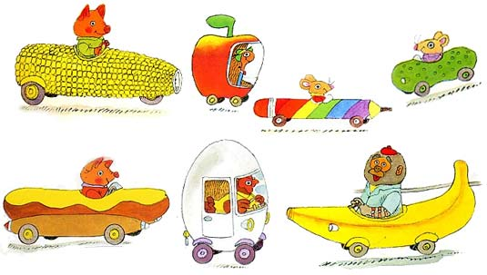

ARRAYS & HASHES
SUN 4/26/2015
So my youngest nephew is obsessed with little cars — like of the matchbox variety. I know, not that out of the ordinary for a 3 year old, but among his favorite little car games is to sort the cars by different criteria. He also has a very specific knowledge of what cars he has, which ones are broken and what I said my favorite car was nearly a year ago. So when I was looking into my life to find some real world examples to ground my readers in the basics of arrays and hashes that is what I reached for — because you know, its adorable.
THE LITTLE CAR BASKET/BUCKET/SUITCASE ETC.
Wherever my nephew is — at home, at his grandparents or in a hotel — he has a container of little cars with him. Programming has a couple of similar concepts, just as my nephew needs a container for his little cars, programming languages need containers for objects and data so that you can do awesome things with them like look for a particular object or transform a lot of things at once. Arrays and hashes are two types of containers (also referred to as collections or data structures) and I will discuss the major differences between them below...
ARRAYS
Arrays are containers that hold ordered objects — meaning that each object inside the array has an index number from 0 - 1. This is an array of little cars called, you guessed it, little_cars:
little_cars = [ "pickle car" , "fire truck", "alligator car", "green racing car", "police car" ]

Arrays can contain strings, as little_cars did, numbers, other arrays and even hashes. You can do all sorts of useful things with them. If I were playing little cars I may want to look into the container to find out how many little cars I have...
little_cars.size #=> 5
or I may want to play color-by-color and look into the container to sort out all of my green cars. Here is where I may need a different type of container. The computer may know that the green car is green because it says so in the string but its way too stupid to know that the pickle car and the alligator car are also green. Here is where hashes may come in...
HASHES
Hashes are just like arrays but they contain key value pairs instead of just independent objects. Thats a fancy way of saying that each element in a hash has a key (a unique identifier) and a value (a value associated with that identifier). In the case of little cars and color-by-color, each unique car is a key and its color is the value. There can be many green cars, but come on, there can only be one pickle car right? A hash can be initialized (created with stuff in it) like this...
little_cars_hash = { "pickle car" => "green", "banana car" => "yellow", "fire truck" => "red", "alligator car" => "green" }
Now, one of the ways we can play color-by-color is by throwing the non-green cars across the room at our brother...whoops! I meant by rejecting any of the elements that don't have the value of "green".
little_cars_green = little_cars_hash.reject { |k,v| v != "green" }
In this block, I am taking the original hash and using the enumerator method reject to sort out any values that don't match (!=) the string green. Then I am saving it in a new array called little_cars_green.
So the long and short of it is: Arrays and hashes are containers/collections/data structures that house objects — strings, integers, floats or arrays. Arrays are ordered and each element has a index (unless the array is empty and thats ok too). Hashes are made of key value pairs and can also be empty by the way. The keys in the key value pairs are unique. Thats that! Hope you enjoyed it.